Từ phát hiện đến phản ứng, trên toàn bộ hệ sinh thái an ninh mạng DrayTek. DraySOAR gom cảnh báo từ mạng, máy tính và lỗ hổng phần mềm về một nơi, giúp đội IT hiểu chuyện gì đang xảy ra và xử lý nhanh hơn, ngay cả khi nhân sự bảo mật còn ít.
Tường lửa, giám sát mạng, bảo vệ máy tính và quét lỗ hổng đều đưa ra cảnh báo riêng. Nhưng khi cảnh báo đến từ nhiều hệ thống khác nhau, đội IT vẫn phải tự ghép các mảnh lại: chuyện gì đã xảy ra, cái nào quan trọng, và nên làm gì. Với doanh nghiệp vừa và nhỏ ít người làm bảo mật, việc này rất tốn thời gian.
DraySOAR kết nối “nhìn thấy” với “hành động”: gom giám sát mạng, bảo mật máy tính, đánh giá lỗ hổng, quản lý sự kiện và phản ứng tự động vào một môi trường tập trung.
Các công cụ bảo mật hiện có vẫn làm đúng việc của mình. DraySOAR thêm một lớp vận hành an ninh tập trung ở phía trên, để biến phát hiện thành hành động.
DraySOAR kết hợp thông tin từ Suricata, Zeek, IP Reputation, DrayEDR, Windows Defender và WinRisk với các Playbook SOAR để giúp đội IT:
DraySOAR vận hành theo Khung An ninh mạng NIST (CSF) 2.0, kết nối khả năng quan sát, đánh giá rủi ro, bảo vệ, phát hiện, điều tra và phản ứng trong một môi trường tập trung, trải đều qua 6 chức năng: GOVERN, IDENTIFY, PROTECT, DETECT, RESPOND và RECOVER.
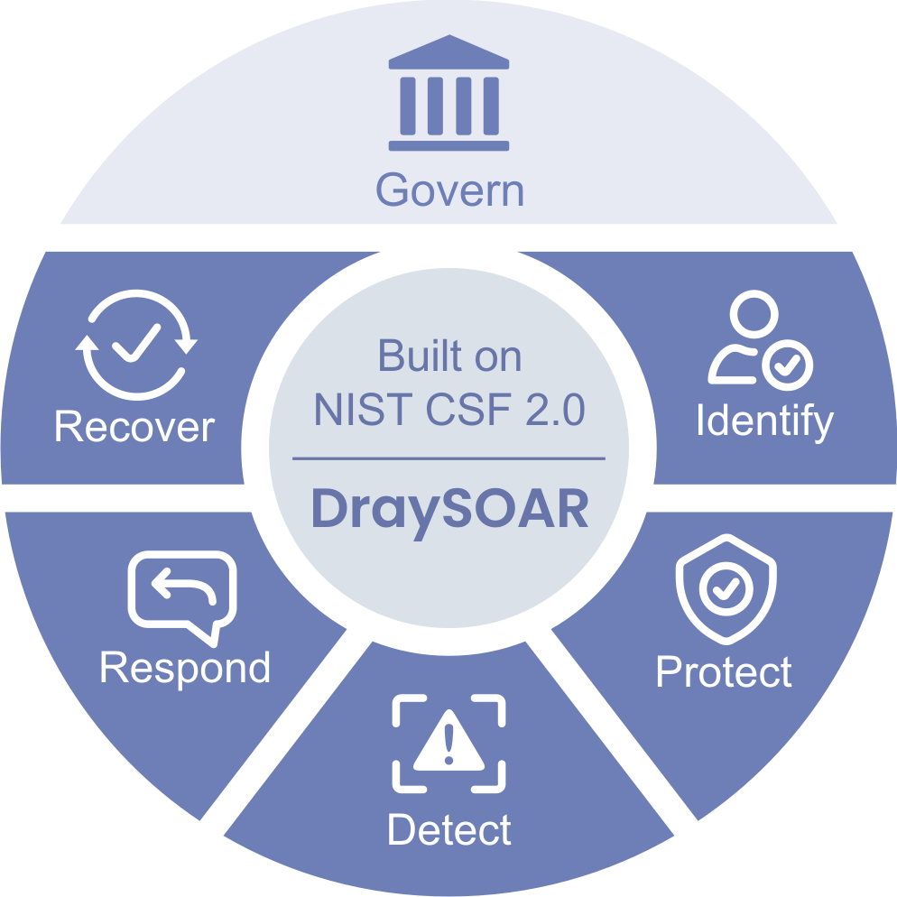
| Chức năng | Năng lực của DraySOAR | Vai trò |
|---|---|---|
| GOVERN Quản trị | Phân quyền người dùng, chính sách an ninh, quản trị tập trung | Thiết lập quản trị và kiểm soát vận hành an ninh |
| IDENTIFY Nhận diện | Kiểm kê máy tính, kiểm tra phần cứng/phần mềm, WinRisk, CPE, CVE, CVSS, KEV, EPSS | Nhận diện tài sản, lỗ hổng và rủi ro |
| PROTECT Bảo vệ | Quản lý máy tính, triển khai tệp đã xác minh, Task Scheduler, cấu hình an ninh | Áp dụng biện pháp bảo vệ và duy trì an toàn cho máy tính |
| DETECT Phát hiện | Suricata, Zeek, DrayEDR, Windows Defender, IP Reputation | Phát hiện hoạt động đáng ngờ trên mạng, máy tính, mã độc |
| RESPOND Ứng phó | Security Events, Playbook DraySOAR, liên kết sự kiện, chặn IP, tắt cổng switch, cô lập máy tính | Điều tra sự cố và phối hợp phản ứng tự động |
| RECOVER Khôi phục | Đóng sự cố, lưu hồ sơ hành động, lịch sử điều tra, tiếp tục vận hành | Theo dõi sau sự cố và duy trì hoạt động liên tục |
Phát hiện hoạt động đáng ngờ chỉ là bước đầu. DraySOAR nối các giai đoạn thành một quy trình liên tục:
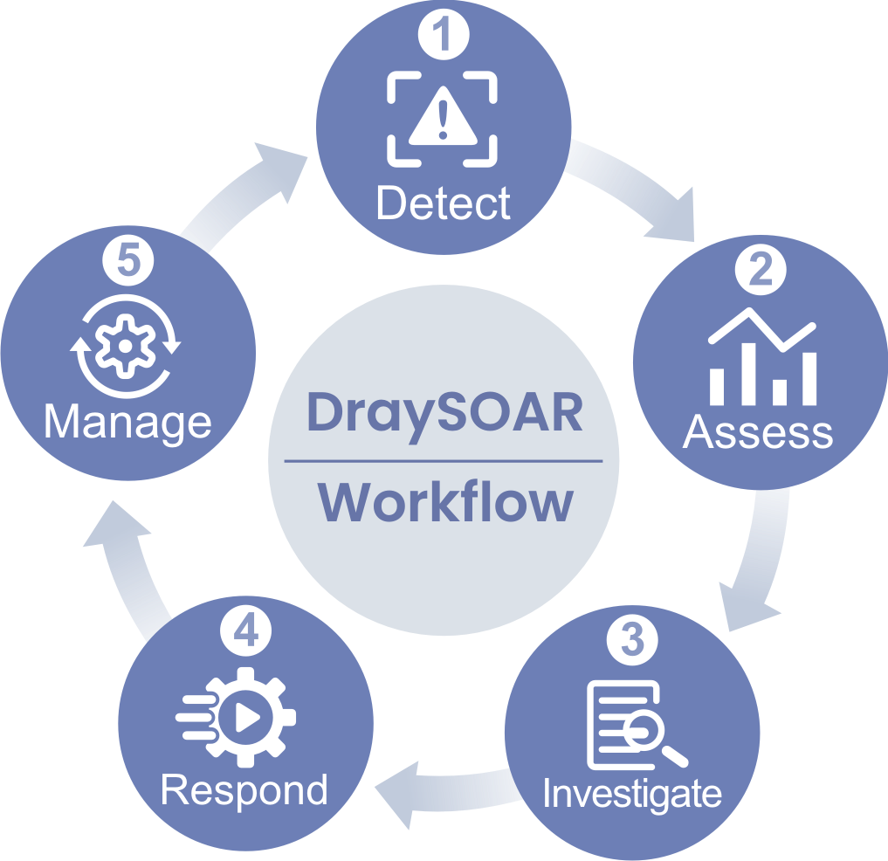
Nhận biết hoạt động đáng ngờ. Nguồn: Suricata, Zeek, DrayEDR, Windows Defender, IP Reputation.
Hiểu mức độ rủi ro, nhờ thông tin tình báo mối đe dọa, ngữ cảnh máy tính, WinRisk.
Dựng bối cảnh từ thông tin mạng, máy tính, mã độc và lỗ hổng.
Hành động bằng Playbook, liên kết sự kiện và các thao tác phản ứng.
Duy trì khả năng quan sát, điều tra và vận hành an ninh liên tục.
Một cảnh báo mạng riêng lẻ không cho biết máy nào bị ảnh hưởng, phần mềm nào đang rủi ro hay mối đe dọa nghiêm trọng đến đâu. DraySOAR kết hợp thông tin từ ba mảng: mạng, máy tính & mã độc, lỗ hổng & rủi ro, để mỗi sự kiện có thêm ngữ cảnh.
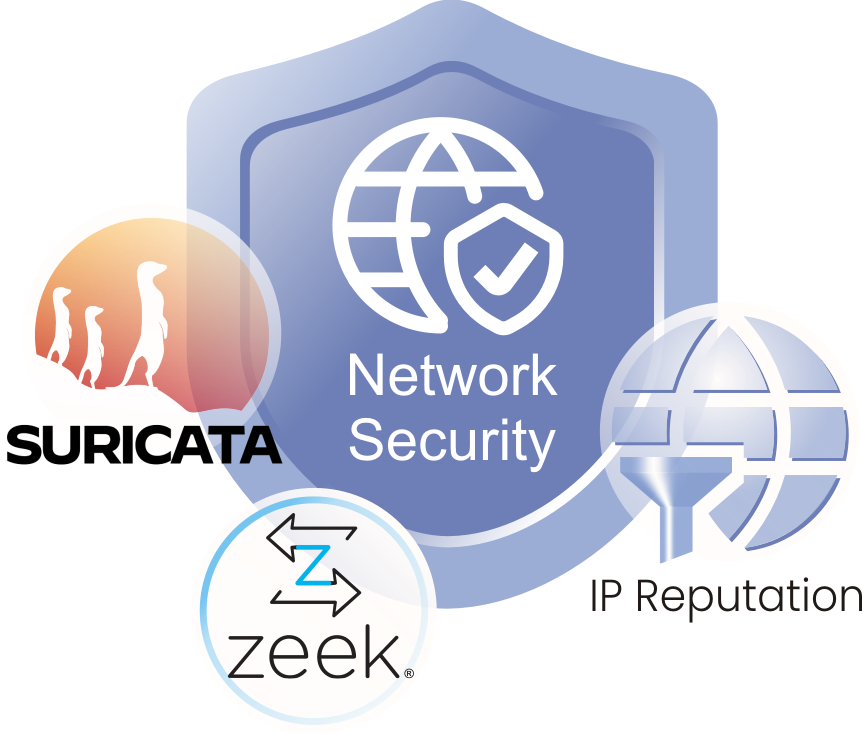
Hoạt động đáng ngờ có thể là kiểu tấn công đã biết, giao tiếp bất thường, hoặc kết nối tới địa chỉ IP nguy hiểm. DraySOAR dùng ba nguồn bổ trợ cho nhau:
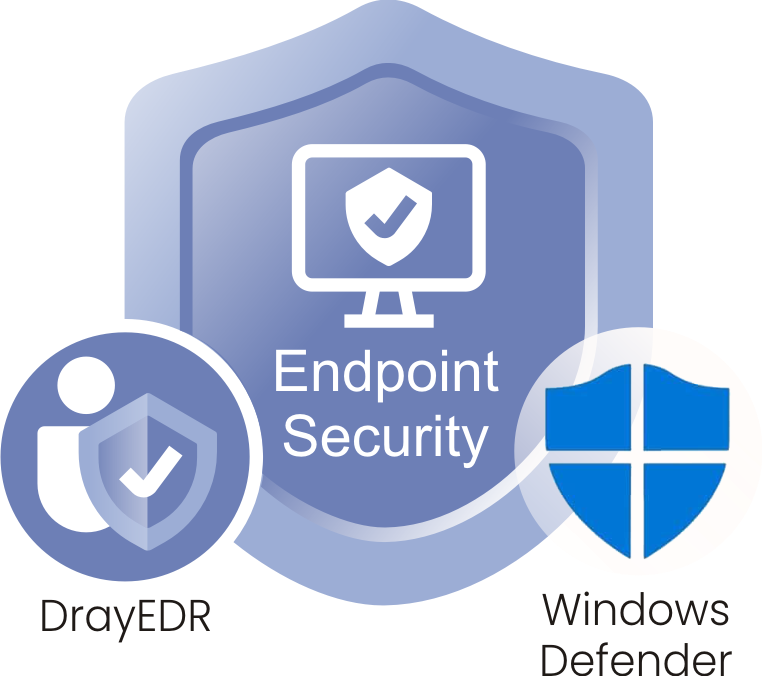
Cảnh báo mạng sẽ hữu ích hơn nhiều khi bạn biết chuyện gì đang diễn ra trên chính máy đó.
Nhờ đó quản trị viên xác định nhanh máy bị ảnh hưởng và xem lại hoạt động liên quan.
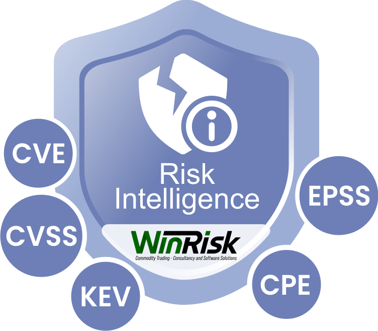
Tìm ra lỗ hổng mới là bước đầu. Bạn còn cần biết nó nghiêm trọng đến đâu, đã bị khai thác ngoài đời chưa và khả năng bị khai thác cao hay thấp. WinRisk kết hợp nhiều nguồn dữ liệu cho các máy được quản lý:
CVE: định danh lỗ hổngCVSS: mức nghiêm trọngKEV: đã bị khai thác thực tếEPSS: xác suất bị khai thácCPE: nhận diện phần mềm
DraySOAR gom sự kiện an ninh, thông tin máy tính, phát hiện mã độc và tình báo lỗ hổng phần mềm về một nơi để quản trị viên điều tra sự cố, đánh giá rủi ro và theo dõi việc xử lý với đầy đủ bối cảnh.
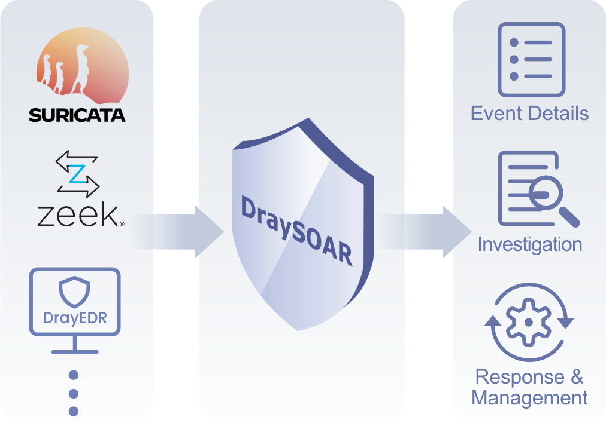
Quản trị viên có thể giao việc, điều tra, đóng sự cố và lưu lại để tra cứu hoặc kiểm toán sau này.
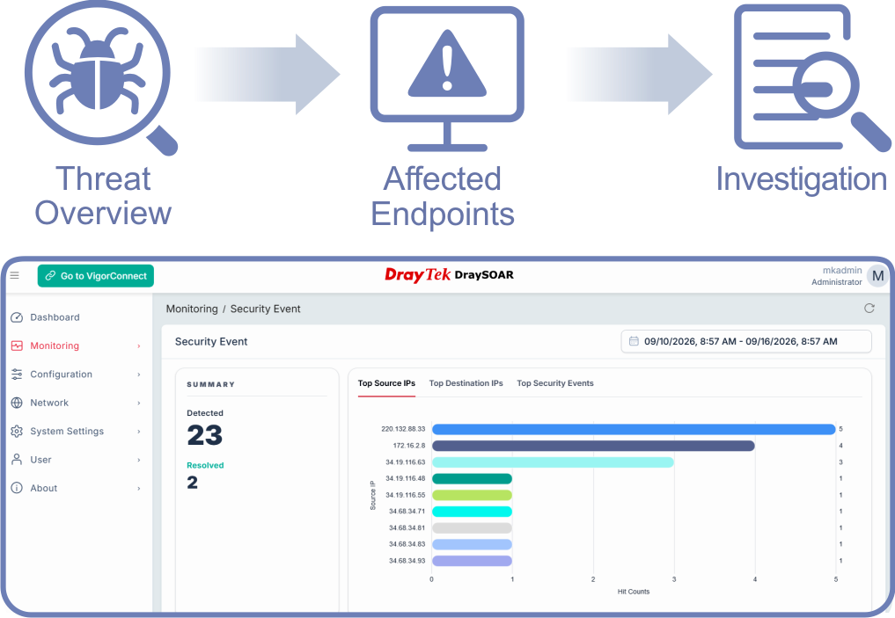
Giúp xác định máy nhiễm, xem lại hoạt động mã độc và lưu hồ sơ xử lý cho từng sự cố.
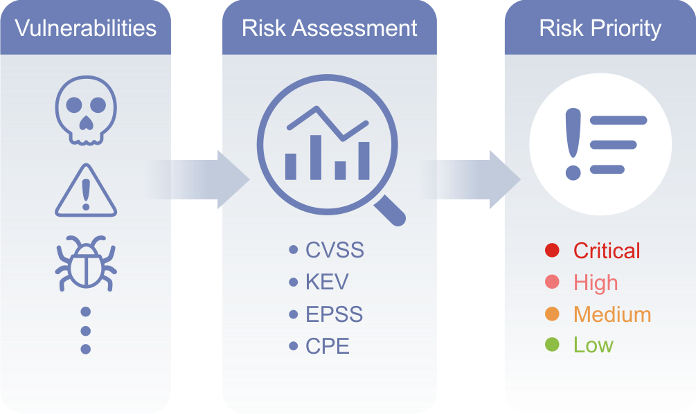
Cùng một lỗ hổng có thể rủi ro khác nhau ở mỗi môi trường. DraySOAR đặt tình báo lỗ hổng của WinRisk cạnh thông tin phần mềm và máy tính để bạn biết phần mềm dễ bị tấn công đang cài ở đâu.
Có thể xem xu hướng lỗ hổng theo KEV, EPSS cao và mức nghiêm trọng từ cao trở lên để ưu tiên xử lý.
Sau khi phát hiện và điều tra, câu hỏi còn lại là: làm gì tiếp theo? Xử lý thủ công nghĩa là xem sự kiện, chọn cách xử lý rồi tự thực hiện trên từng hệ thống. Playbook của DraySOAR nối các sự kiện đủ điều kiện với hành động đã định sẵn, giảm thao tác lặp lại và giúp phản ứng nhất quán.
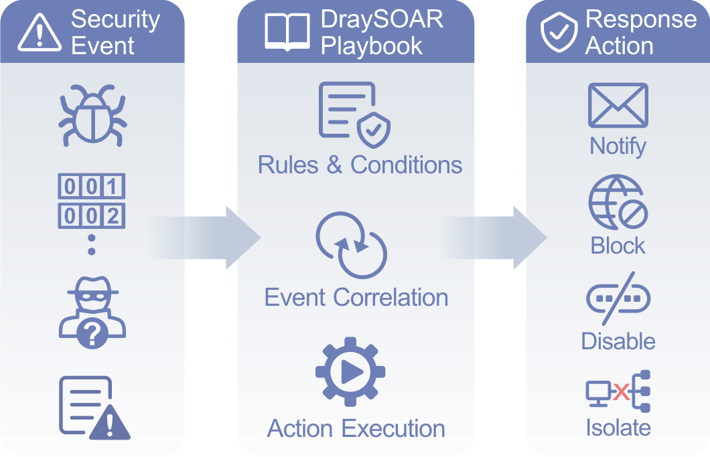
Quản trị viên chọn sự kiện làm điều kiện kích hoạt Playbook, rồi đặt điều kiện để quyết định khi nào hành động được thực thi.
Khi cần thêm ngữ cảnh, liên kết sự kiện sẽ gộp các tín hiệu liên quan trước khi kích hoạt hành động, giúp tránh phản ứng nhầm với một cảnh báo đơn lẻ. Mỗi quy trình trở nên lặp lại được thay vì xử lý tay từng sự kiện.
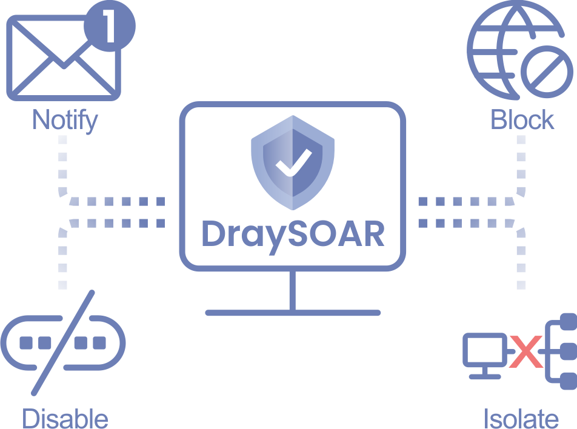
Khi điều kiện Playbook thỏa mãn, DraySOAR có thể thông báo hoặc ngăn chặn qua thiết bị mạng và máy tính được hỗ trợ:
Gửi e-mail, thông báo cho quản trị viên
Chặn IP bên ngoài, chặn lưu lượng đáng ngờ
Tắt cổng switch, ngắt thiết bị có dây
Cô lập máy tính, hạn chế kết nối WAN/LAN của máy
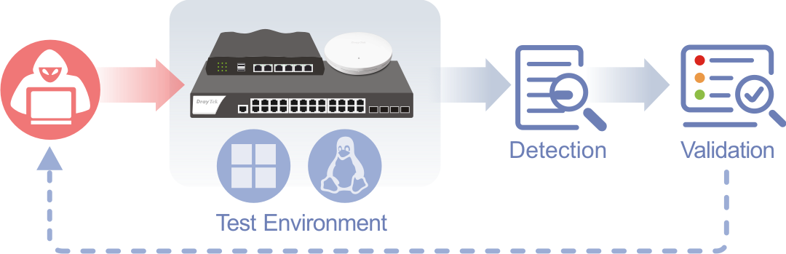
Quy trình an ninh cần được kiểm thử, không chỉ cấu hình. DraySOAR được đánh giá bằng mô phỏng đối kháng và tấn công có kiểm soát.
| Kịch bản | Môi trường |
|---|---|
| Giả lập đối kháng MITRE Caldera | Windows |
| Lừa đảo & phát tán tệp độc hại | Windows |
| Khai thác lỗ hổng | Linux / ActiveMQ |
Phép thử MITRE Caldera bao phủ hơn 1.300 phương thức tấn công áp dụng cho Windows để đánh giá khả năng quan sát và phát hiện. Các mô phỏng bổ sung gồm: phát tán tệp độc hại qua lừa đảo và hành vi C2 (kẻ tấn công điều khiển từ xa) trên Windows, và khai thác lỗ hổng dịch vụ Apache ActiveMQ trên Linux. Kết quả được dùng để tìm chỗ hở, đánh giá liên kết sự kiện và tinh chỉnh luật Playbook.
Xác định mối đe dọa và quyết định cách xử lý mới là một nửa công việc. Lệnh phản ứng còn phải đến được nơi cần hành động. DraySOAR nối tình báo an ninh và tự động hóa Playbook với thiết bị mạng DrayTek và máy tính được quản lý. Qua TR-069, VigorConnect và DrayEDR, hành động đi từ trung tâm điều tra xuống cổng ra internet (gateway), mạng có dây, mạng Wi-Fi và máy tính.
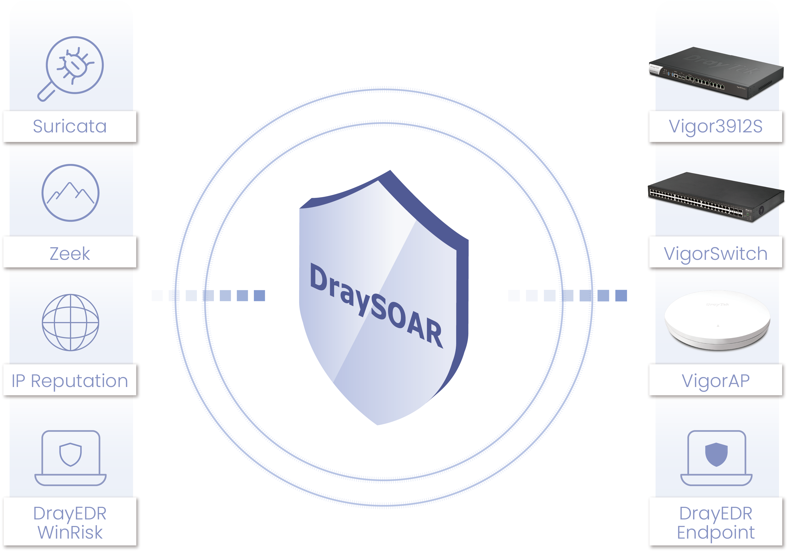
Tùy sự kiện và Playbook, DraySOAR áp dụng hành động ở những điểm khác nhau của hệ sinh thái:
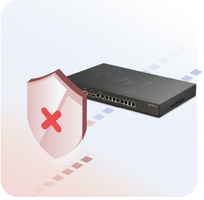
Chặn mối đe dọa: chặn lưu lượng từ IP bên ngoài đáng ngờ
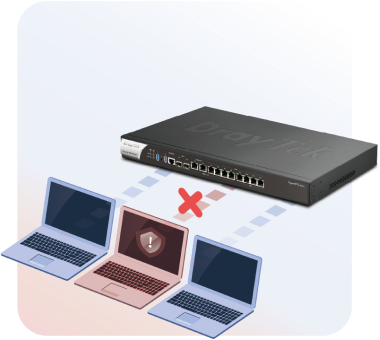
Cô lập mạng có dây: tắt cổng switch
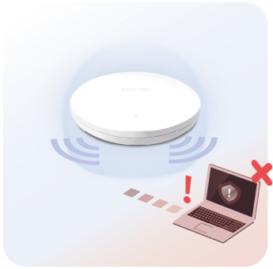
Cô lập Wi-Fi: kiểm soát thiết bị không dây đáng ngờ
Cô lập máy tính khỏi kết nối WAN và LAN
* Việc cô lập Wi-Fi dựa trên rủi ro an ninh phát hiện được, không phụ thuộc loại SSID, kể cả thiết bị kết nối qua SSID khách (Guest).
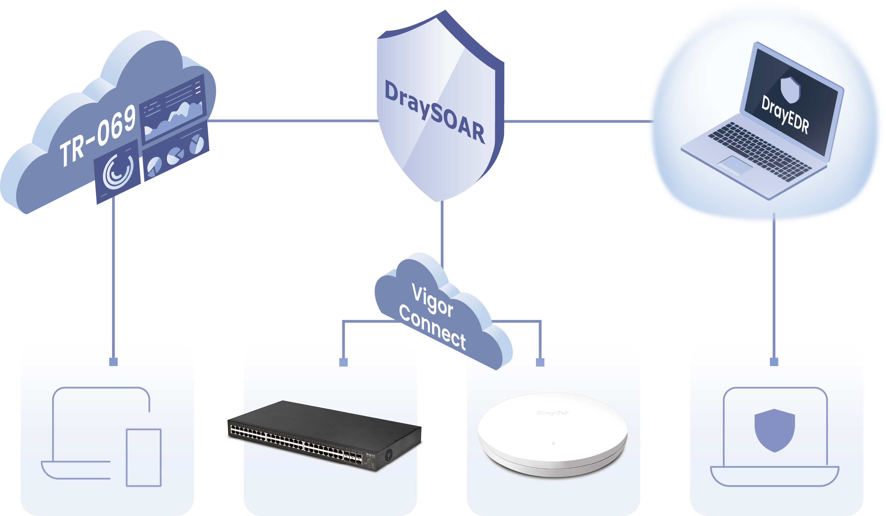
* Thiết bị và khả năng phản ứng được hỗ trợ tùy theo model và phiên bản firmware.
Địa chỉ MAC không phải lúc nào cũng nhất quán, nhất là khi thiết bị dùng MAC ngẫu nhiên. DraySOAR nhận diện máy được quản lý qua tác tử DrayEDR, kèm thông tin IP/MAC, nên vẫn theo dõi được máy khi địa chỉ mạng thay đổi.
Tình báo an ninh → Phân tích & điều tra → Playbook → Hành động phản ứng → Cô lập mạng/máy tính. Hành động có thể áp dụng ở gateway, mạng có dây, mạng không dây hoặc máy tính, tùy sự kiện và Playbook đã cấu hình.
Công việc an ninh không dừng khi sự cố được phát hiện và ngăn chặn. Đội IT còn phải theo dõi tình trạng, quản lý máy tính, xem sự kiện, duy trì chính sách và làm các tác vụ định kỳ. DraySOAR gom các việc này vào một môi trường tập trung.
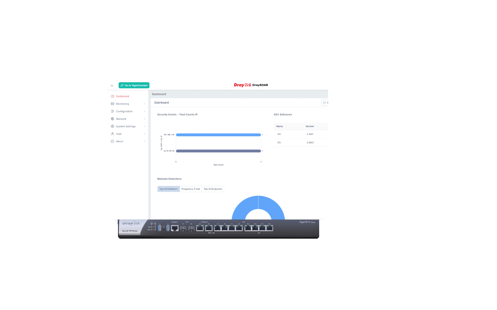
Một chỗ để theo dõi, cấu hình, quản lý máy tính và quản trị hệ thống, không cần mở từng công cụ riêng.
Tình trạng an ninh, tình trạng hệ thống
Kiểm kê máy tính, phát hiện mã độc, sự kiện an ninh, lỗ hổng phần mềm, nhật ký hệ thống
Quản lý máy tính, nhóm máy, Playbook, hành động phản ứng, Task Scheduler, Allowlist, IP Reputation
Tài khoản, vai trò, phân quyền, nhóm người dùng, thông báo
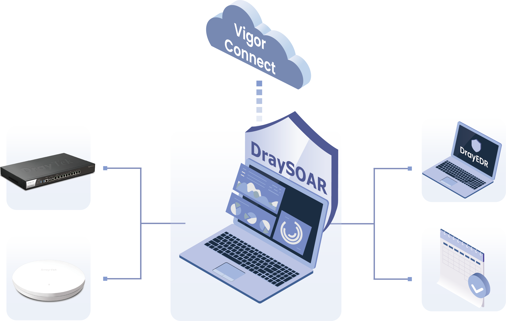
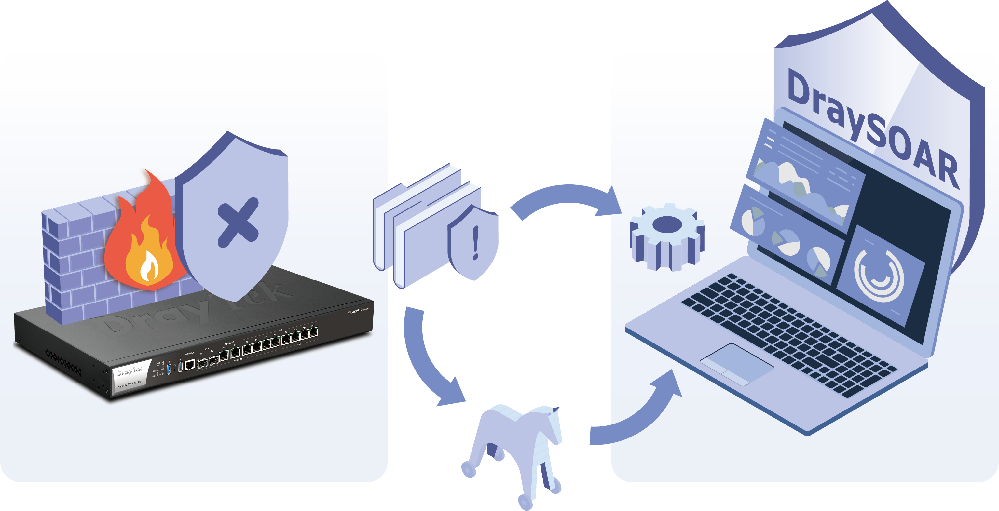
Vigor3912S chạy DraySOAR ngay trên thiết bị, bên cạnh khả năng bảo vệ ở cấp cổng mạng. Tại gateway, thiết bị phát hiện và chặn mối đe dọa mạng theo thời gian thực. Suricata và Zeek chạy trên Vigor3912S gửi sự kiện an ninh về DraySOAR để giám sát, điều tra và liên kết sự kiện. Các Playbook đã cấu hình sẽ kích hoạt hành động khi đủ điều kiện.
| Vigor3912S – Bảo vệ cổng mạng | DraySOAR – Vận hành an ninh |
|---|---|
| Bảo vệ thời gian thực ở cấp gateway | Giám sát an ninh tập trung |
| Phát hiện & chặn mối đe dọa mạng | Điều tra & liên kết sự kiện |
| Smart Action | Phản ứng theo Playbook |
| Sự kiện Suricata & Zeek | Phản ứng phối hợp mạng & máy tính |
Nhờ đó, đội IT điều tra mối đe dọa mạng, phối hợp phản ứng và theo dõi việc xử lý sự cố với ít thao tác thủ công hơn.
DraySOAR đưa khả năng quan sát, điều tra, đánh giá rủi ro và phản ứng vào một quy trình liền mạch, giảm sự rời rạc trong vận hành an ninh để quản trị viên xử lý với ngữ cảnh tốt hơn.
Gom thông tin mạng, máy tính, mã độc, lỗ hổng và sự kiện an ninh vào một nơi
Dùng tình báo lỗ hổng, KEV, EPSS và mức phơi nhiễm của máy để biết rủi ro nào cần chú ý trước
Nối sự kiện an ninh với ngữ cảnh máy tính, mã độc và lỗ hổng
Dùng Playbook kích hoạt hành động định sẵn khi điều kiện được đáp ứng
Tập trung giám sát, quản lý và các tác vụ định kỳ
Áp dụng hành động được hỗ trợ trên gateway, switch, AP và máy tính
DraySOAR dành cho các tổ chức cần giám sát, điều tra và phản ứng với hoạt động an ninh trên hạ tầng mạng và máy tính mà không phải quản lý riêng từng mảng.
Tập trung giám sát, điều tra và phản ứng an ninh dù nguồn lực IT hạn chế.
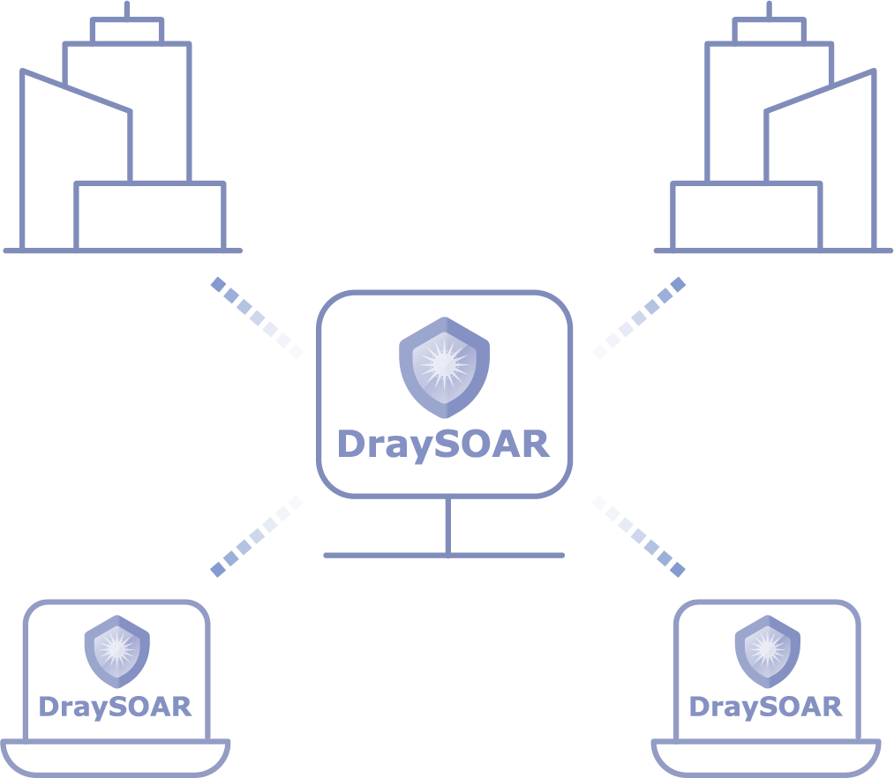
Duy trì khả năng quan sát an ninh và phối hợp phản ứng giữa các địa điểm phân tán.
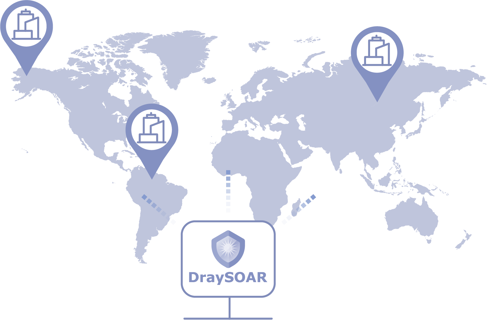
Xây dựng quy trình giám sát, điều tra và phản ứng theo Playbook có thể lặp lại cho nhiều khách hàng.
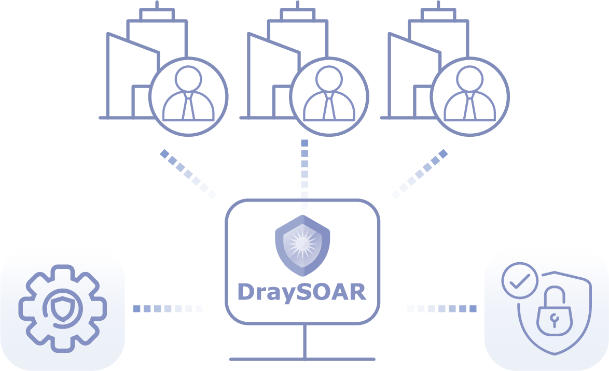
Giám sát hoạt động an ninh của người dùng, máy tính, mạng có dây và mạng không dây.
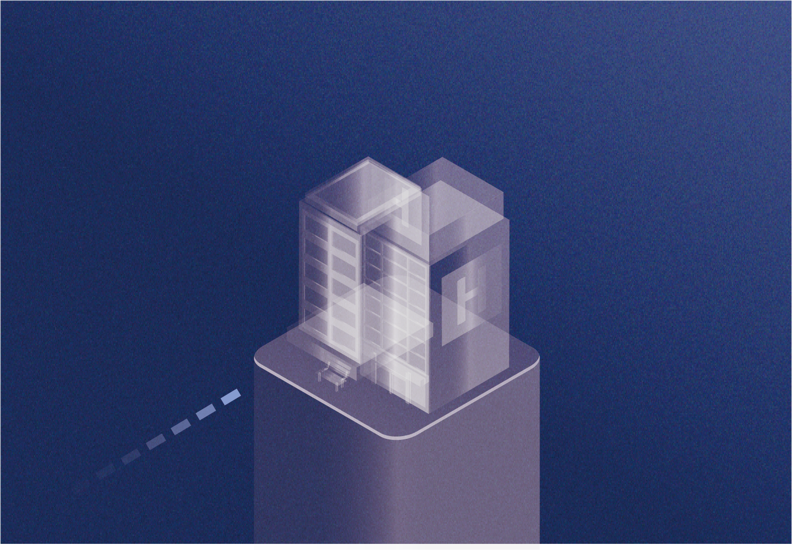
Tập trung vận hành an ninh qua nhiều địa điểm và môi trường truy cập.
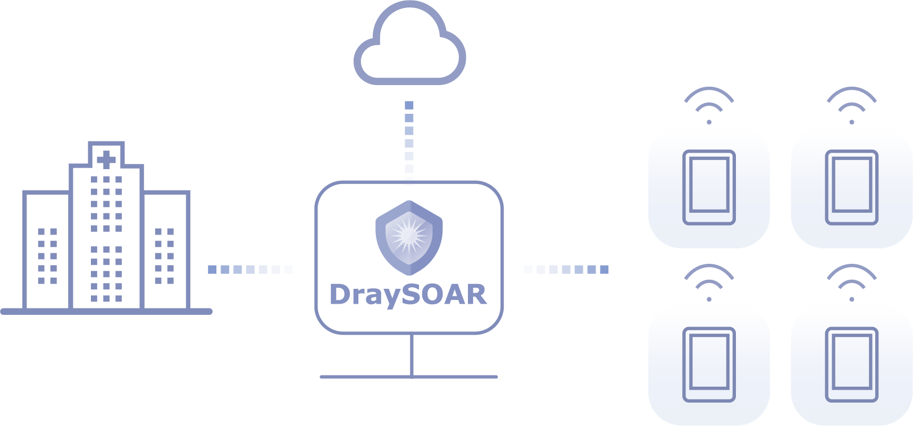
Liên hệ An Phát Technology, nhà phân phối chính thức DrayTek tại Việt Nam, để được tư vấn giải pháp DraySOAR phù hợp với hạ tầng của bạn.
Liên hệ tư vấn